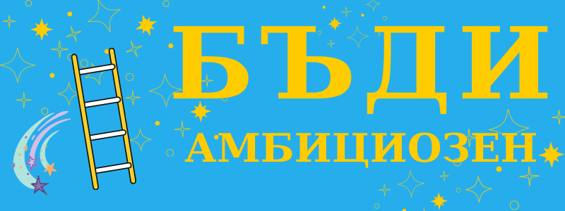

Бъди амбициозен
Щом четете значи вече сте, но целта ми е да се почуствате по- добре от този факт.
Обратното на това, което несъзнателно ни се налага, когато се опитаме да постигнем нещо предизвикателно, амбицията не е лошо нещо. Да си в период, когато го даваш по- спокойно също не е осъдително: не е задължително да си мързелив, може и да работиш здраво в своята градина.
Да си амбициозен значи просто да искаш да си нещо повече- да си по- богат или по- умен, или да искаш да постигнеш нещо без да се отказваш заради несгоди или провали.
Ако търсиш само пари или слава, да, амбицията може да те поквари.
Но ако се стремиш да постигнеш нещо по- голямо и донякъде да имаш влияние върху света не е лошо.
Разликата се свежда до мотива: несигурност, когато преследваме акт и статус, или самоактуализация, когато целта ни е себеуважение и обич.
не значи, да си егоистичен
Да вземем например Флорънс Найтингейл, която смятала, че призванието й е да бъде милосърдна сестра. Но тя не се задоволява просто с обиколки на болните и ранените в Кримската война, а документира постигнати резултати, прилага и измисля методи от новата наука статистика. Това не й е достатъчно, а основава първото училище за медицински сестри, което вдъхновява въвеждането на здравословни практики, които днес вземаме за даденост.
не значи да си агресивен
За да постигнете каквото и да е, трябва да действате за промяна, което неминуемо води да настъпване на хора, които се облагодетелствата от настоящето положение. Една от тъжните страни на живота е, че нерядко си мислим, че за да се справим с натиска, трябва да се превърнем в нещо, което мразите- дали агресор (бий се) или страхливец (бягай). Трудно е да избереш мира, ако отсрещната страна цели да се наложи. Така че една от най- трудните задачи, пред които сме изправени е за се научим да отстояваме позицията си без да прибягваме до насилие. За да го постигнем, първо трябва да възстановим човечността на противника си, а след това да се изправим срещу собствения си лош подтик. Ненасилието не е липса на насилие, а неговото превъзмогване. А за да стане това трябва да признаете, че имате същите желания и слабости.
не значи да си перфектен
Американският писател Дейвид Фостър Уолъс има следното да каже по този въпрос: “Знаете ли, основното при перфекционизма. Перфекционизмът е много опасен, защото, разбира се, ако вярността ви към перфекционизма е твърде висока, никога няма да направите нищо. Защото правенето на каквото и да било води до– Всъщност е донякъде трагично, защото означава, че жертвате колко прекрасно и перфектно е нещото в ума ви заради това, което всъщност е.”
И все пак си заслужава да направите грозен, но вкусен кейк вместо да си остане само в мечтите ви.
не значи да си нереалистичен
Днес ако имаме някакви по- трудно постижими ценности, нищо чудно да ни обадят като нереалисти. Преди не е било срамно да се стремиш към идеал, дори да знаеш, че е непостижим. Всеизвестно е, че за Платон този свят е само несъвършено отражение на онзи истинския, но той все пак е призовавал за стремеж към по- висши ценности и цели.
Все пак не бива да пренебрегваме ограниченията си. За да може да поемате рискове, първо трябва да направим всичко възможно, дори и да се провалите, това да не означава трагедия. Това става като инвестираме във финансовата си сигурност, дисциплината и уменията си.
***
В крайна сметка, ако са чисти, амбициите са друга дума за мечти, а имаме нужда от повече хора, които не ги е страх да си представят по- добър свят.
Вижте още: